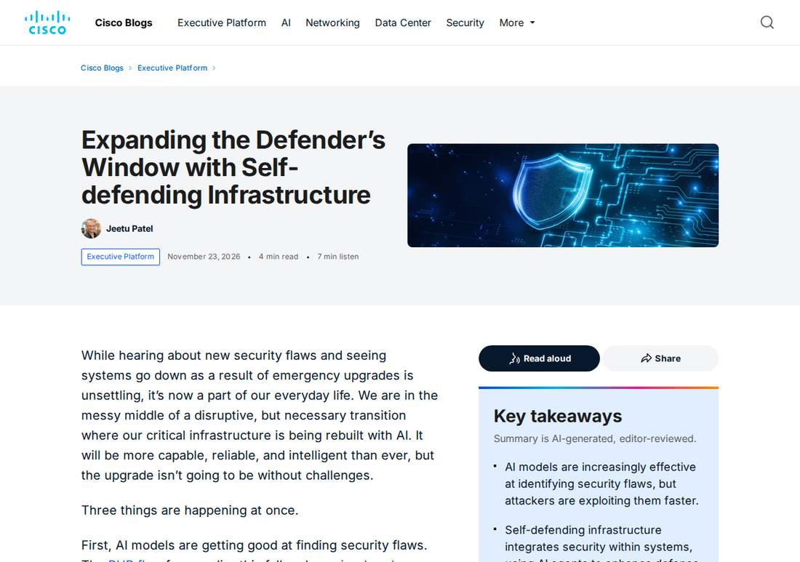

Cisco and OpenAI Open Source Shirudo, Letting AI Agents Shield Linux Systems From Exploits
Cisco and OpenAI jointly launched Shirudo on November 23, 2026, an open-source project that lets AI agents write and test signed eBPF shields blocking exploit paths on running Linux hosts while a permanent patch is prepared. The approach has already detected and blocked exploits of the recent PHP flaw and Java4Shell in testing, according to Cisco.
- 01THE PROBLEM — Earlier this fall, a PHP flaw and, last week, a major Java bug were both found by the startup Calif using OpenAI's Cyber model, Cisco says. Exploit campaigns were underway within a day of disclosure for both, while permanent fixes take weeks or months to reach most systems.
- 02THE LAUNCH — November 23, 2026: Cisco and OpenAI jointly announce Shirudo, an open-source project co-developed by the two companies. The runtime is published under a BSD 2-Clause license at github.com/shirudo-dev/shirudo.
- 03HOW IT WORKS — Agents scan code and vendor disclosures, trace a vulnerability to its attack path, and write a small signed eBPF shield. The shield is validated against the exploit and the running service, deploys only with human approval and a verified signature, needs no reboot, and retires when the real patch lands.
WHAT HAPPENEDWhat Happened
Cisco and OpenAI jointly announced Shirudo on November 23, 2026, an open-source project that lets AI agents defend running Linux systems while a permanent patch is still being prepared. Shirudo, Japanese for "shield", is built on eBPF, which runs small programs inside the operating-system kernel without a restart. Cisco published the announcement on its blog at 21:20 UTC; a joint press release followed the same day, and the code is published at github.com/shirudo-dev/shirudo under a BSD 2-Clause license.
Here is how it works. Agents scan open-source code and take in vendor disclosures, trace each vulnerability to the affected assets and attack paths, then write a small, targeted shield: an eBPF program that blocks the behavior the exploit needs while legitimate traffic still passes. The shield is tested against the exploit and the running service, and only graduates to active blocking when the evidence says it is safe. Every shield is cryptographically signed and verified by the host before it runs, and it retires when the real patch lands.
The case for it is the shrinking gap between disclosure and exploitation. Cisco points to two recent flaws found by the startup Calif using OpenAI's Cyber model: a PHP vulnerability it says affected an estimated 70% of global websites and web infrastructure, and Java4Shell, which it says could let attackers take control of affected servers worldwide. Exploit campaigns were underway within a day of disclosure for both, while permanent fixes take weeks or months to reach most systems. Shirudo's agent-written code has already detected and blocked attempts to exploit both vulnerabilities in testing, according to Cisco. Cisco and OpenAI will walk through the project in detail in a webinar on December 15.
WHY IT MATTERSThe patch gap is now measured in hours, and only agents move at that speed.
Cisco's framing is the defender's window: AI now finds flaws, attackers exploit them with swarms of agents, and the agents enterprises deploy are themselves a new risk vector. A permanent fix used to unfold over days and weeks; Cisco says it is now minutes and hours. Shirudo puts an agent-written shield into that gap, on the running host, instead of leaving the system exposed until the patch arrives.
The pairing matters as much as the tool. Cisco brings the systems experience — its Isovalent team helped create eBPF — and OpenAI brings frontier models and security research. Cisco is a charter member of OpenAI's Daybreak Trusted Access program for cyber and of Anthropic's Project Glasswing, and it calls Shirudo the first of many joint projects with OpenAI.
THE WATCHPOINTA shield is only as trustworthy as its signature and its approver.
Shirudo asks operators to run agent-written code in the kernel, the most privileged place in the system. Cisco's design answers with signatures, host verification, observe-only testing and human approval before any shield deploys. That is the right shape, but it is a design claim, not a track record.
The honest test is the first shield that blocks legitimate traffic or misses an exploit variant in production, not the two demo vulnerabilities. Shirudo is an open implementation and a controlled proof of concept for now; automated identification, validation and fleet-wide deployment are longer-term goals, not today's product.
THE SHIFTWhat Changed
SIGNAL JUDGMENT — ANALYSISThe patch gap is the battlefield now, and Cisco and OpenAI want agents fighting in it.
Tokenta Signal's judgment: Shirudo is the most concrete answer yet to the agent-security problem the labs themselves created — AI that finds flaws faster than humans can patch them. Two frontier names, an open-source runtime, and a design that keeps humans on approval make this more than a demo. The real test is operational: whether a signed, agent-written program in the kernel earns the trust of the operators who have to run it, and whether the first shield that gets something wrong in production sets the idea back.
WHAT REMAINS UNCERTAINWhat Remains Uncertain
EVIDENCEEvidence

Cisco and OpenAI jointly announced Shirudo on November 23, 2026: an open-source project that lets AI agents write and test signed eBPF shields blocking exploit paths on running Linux hosts while a permanent patch is prepared.
PRIMARY SOURCESPrimary Sources
- Cisco: Expanding the Defender's Window with Self-defending Infrastructure
https://blogs.cisco.com/news/expanding-the-defenders-window-with-self-defending-infrastructure - PR Newswire: Cisco and OpenAI Launch Shirudo, A New Project to Safeguard Agentic AI
https://www.tradingview.com/news/prnewswire:01a3fa61d3a8e:0-cisco-and-openai-launch-shirudo-a-new-project-to-safeguard-agentic-ai/ - Shirudo: Shirudo on GitHub
https://github.com/shirudo-dev/shirudo